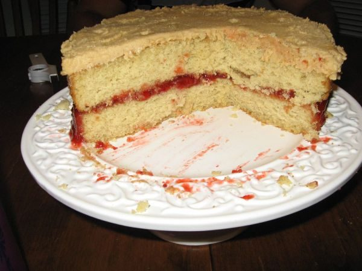

Peanut Butter-Jelly Cake

Photo: kimberlykv (CC BY 2.0)
A peanut butter layer cake filled with grape jelly between the layers and topped with a peanut butter frosting.
Directions
- Cream margarine and peanut butter, gradually add sugar, beat at medium speed until light and fluffy. Add 1 egg at a time and beat each till blended. Combine flour, salt and baking powder. Add to cream mixture alternately with milk . . . end with flour. Stir in vanilla. Pour into 2 greased and floured 9 inch pans. Bake a 350 degrees 30-35 minutes. Cool in pans 10 minutes. Remove and place on wire racks. Spread jelly between layers, then frost.
- FROSTING
- Cream margarine and peanut butter till fluffy add vanilla, mix well. Add sugar to mixture with milk beat until smooth to spread.
- Cream the margarine and peanut butter, then gradually add the sugar, beating at medium speed until light and fluffy.
- Add the eggs one at a time, beating each until blended.
- Combine the flour, salt, and baking powder. Add to the creamed mixture alternately with the milk, ending with the flour. Stir in the vanilla.
- Pour into 2 greased and floured 9-inch pans. Bake at 350 degrees for 30 to 35 minutes.
- Cool in the pans 10 minutes, then remove and place on wire racks.
- Spread the grape jelly between the layers, then frost.
- Make the frosting: Cream the margarine and peanut butter until fluffy, add the vanilla, and mix well. Add the powdered sugar along with the milk and beat until smooth enough to spread.
Goes well with
https://baron-3dl.github.io/normans-kitchen/recipe/peanut-butter-jelly-cake.html